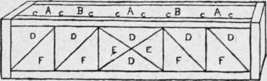
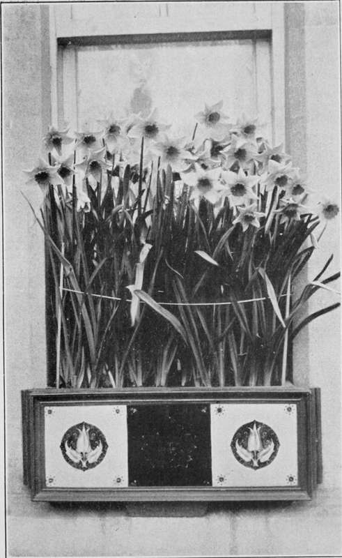

Chapter VII. Keeping Up The Flower Display
Description
This section is from the book "Town Gardening", by Mary Hampden. Also available from Amazon: Town Gardening.
Chapter VII. Keeping Up The Flower Display
Reserve Plants. Frames in Yards and on Porch-tops. How to add to Beds and Boxes. The Art of removing Plants. Early-flowering Chrysanthemums, Kochias, Beets, etc. Refilling Window-boxes. Meadow-saffrons, etc.
NO matter what plants the town-house occupier specializes in for the summer show, he should have a few too many, and keep those growing on, somehow and somewhere, so as to replace any of the flowering or foliage specimens that fail. There are bound to be misfortunes and accidents. It is easy to imagine the doleful appearance of a bed of dwarf blue asters in which two plants turned out to be violet, or of a stone vase by the hall door in which three of the ring of red begonias, surrounding a white marguerite, had perished. In window-boxes any awkward gap will spoil the whole display.
If there is only a backyard, supposing it receives some sunshine, a fair-sized garden-frame will prove of immense value. A flat roof-top will be an even better site for one ; the sun-heat will not be too fierce if some old Japanese reed mats are kept to lay over the glass or over the open frame, or to fasten to thin erect bamboo canes as a screen. The bamboo canes answer delightfully if their lower lengths can slip into sockets of iron affixed to the wood of the frame, and the screens serve, in chilly times, as shelter from winds.
There is often a large roof above the porch, in a town house, either entered upon through a staircase window or by a balcony. This should be made the foundation of a really fine plant-show, of course, but it can be turned into real use as well, if a long narrow frame for growing things in is placed at the edge nearest the road. It will be hidden by the parapet, and the plant display may rise just behind it, leaving the gardener space at the two sides to visit it in comfort. Many ironmongers and florists stock small deep frames that could be used end to end.
In these frames, shaded and" sheltered by the parapet, the surplus begonias, stocks, asters, verbenas, geraniums, etc. etc., can be grown on in readiness to fill gaps. They may also be used for taking cuttings in, say of calceolarias, geraniums, fuchsias, pansies, violas and carnations; for receiving seed-pans and boxes of pricked-out seedlings.
When making any addition to beds, tubs or boxes, it is necessary to get the soil into fit condition, neither too dry nor too wet, which a watering overnight usually secures, and also to prepare similarly the soil round the plants that are to be lifted or turned out of pots. Then they will ' come away,' dug out by the trowel or released from pots, with what is known as ' ball of soil intact,' and the roots will not only have no rough usage, but need not know they are moved from one place to another. This being so, neither foliage nor blooms will flag.
I have moved a dwarf hybrid perpetual rosebush in July, when it was in full flower, and replanted it in another part of a garden, by this method, without there being the slightest check to its growth or injury to its health ; but this necessitates the utmost care, of course, and deep and wide digging by a spade. I do not recommend the attempt to be made by any amateur, but merely describe it here as an illustration of how simply any small plants can be removed safely.
Even when no plants have failed in beds or receptacles, some may have proved stunted, or have yellowed foliage, or have insisted on growing too lanky, instead of bushy, so make a bad effect.
Even when none of these troubles have occurred the beds or receptacles may look rather bare, and then a store of blue or white lobelia, of dwarf chrysanthemum-flowered asters, dwarf French marigolds, the iceplant (Mesembryanthemum crystalli-num), pigmy godetias, stocks, violas, etc., will justify its existence.
Crimson beet is a serviceable tall plant to keep in reserve, and summer cypresses (Kochi trico-phylla), each in a small pot, may be either used to add to insufficient plant displays or be potted on once or twice to make pretty plants to use on the dining-table or in the drawing-room.
A favourite expedient of my own is to dig up a portion of a front-garden edging of mossy saxifrage (Saxifraga hypnoides) in the middle of summer, and set its dainty green tufts as a close carpet to beds, or tubs, where the flowering plants stand rather too widely apart. By October's end the saxifrage tufts will be happy little plants to use for winter bedding, or for making edgings and additions to rock-gardens ; variegated arabis, purple rock cress (Aubrietia) may be similarly treated.
Annual plants, such as larkspurs, stocks, asters, clarkias, that bloom early in the summer, frequently go yellow now and begin to die. Well, the town-dweller need only repair to the nearest florist, purchase some early-flowering chrysanthemums, just budding in pots, and turn these out, balls of soil intact, as described. They will give him ample reward a little later. Or, as the year begins to think of waning, it will be better to sink the pot chrysanthemums, with a view to housing any that have not done flowering when frost threatens.
Naturally, geraniums in pots, and countless other of the plants florists offer, can be used in these ways, only the town-gardener seldom knows where to keep large quantities of delicate plants during winter. The chrysanthemums can be cut down in November, and packed closely in a box of a little soil, have some more soil thrown over them, then be stored in an attic by a window that is often open. With a minimum of watering they will survive till spring, then can be divided and replanted or repotted, or, if placed in warmth, will send forth shoots that can be detached as already rooted 'cuttings.' Old newspapers will suffice to keep frost from them in the attic, whereas succulentstemmed geraniums might generate moisture, turn mildewy, or succumb through the cold. Fuchsias are easier to keep than are geraniums or marguerites.
If the window-boxes have to be wholly refilled now, early chrysanthemums are quite the best plants, and the grey-leaved, yellow-and-scarlet blossomed, succulent Echeveria secunda glauca,sold by all florists, will be a pretty, inexpensive edging, that will be neat and effective as soon as installed. Echeverias may be placed closely together in large pots, or singly in small ones, to be housed during winter.
A Tile-fronted Window-Box.
A Green euonymus.
B Gold chrysanthemums.
C Echeveria secunda glauca.
D Pale blue tiles. E Deep blue tiles. F Cream tiles.
There is a charming method for refurnishing semi-shady window-boxes, urns, etc. Buy some miniature variegated euonymuses that can do duty until next June, then plant among them bulbs of meadow-saffrons (Colchicums), three inches apart, two inches deep. These are flowers shaped like giant crocuses ; the common kind is a lovely peach-mauve, and there are crimson, purple and white varieties that cost much more. Their marvellous merit is that they will bloom about six to nine weeks after the bulbs are planted, and then the foliage will appear and make a nice carpet.
A few ordinary crocuses and snowdrops put in among this carpet in November will make a pleasing note later in front of the variegated shrubs. But let the purchaser of all the bulbs make sure that he obtains those of flowering size. It is often worth while to fill a garden border with thousands of young bulbs, to grow on for the future, but the town-house front demands the mature and very best.
Narcissi In The Window Box.
Continue to:
- prev: Chapter VI. Daily Routine And Seasonable Work
- Table of Contents
- next: Chapter VIII. How To Group Pot Plants